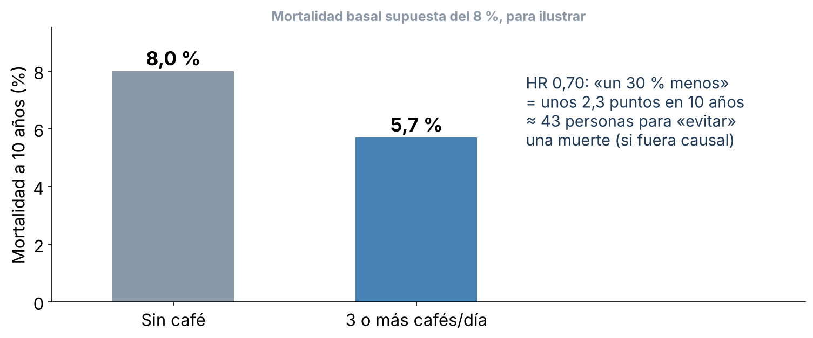
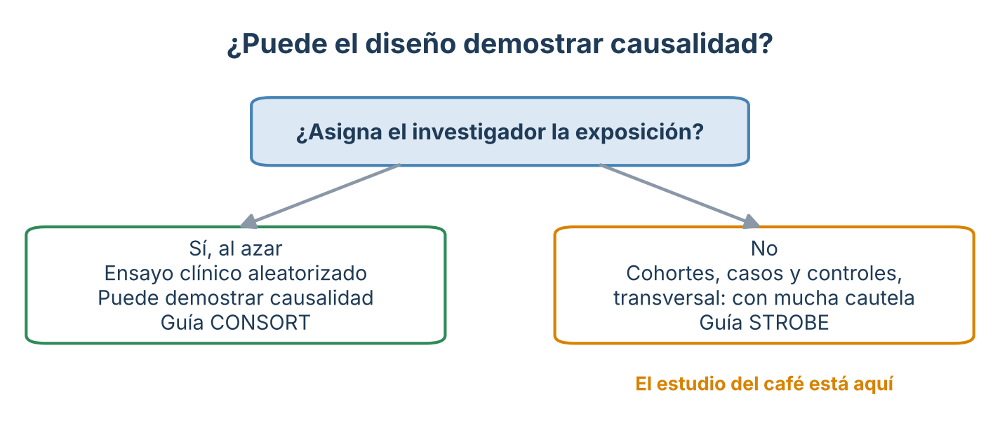
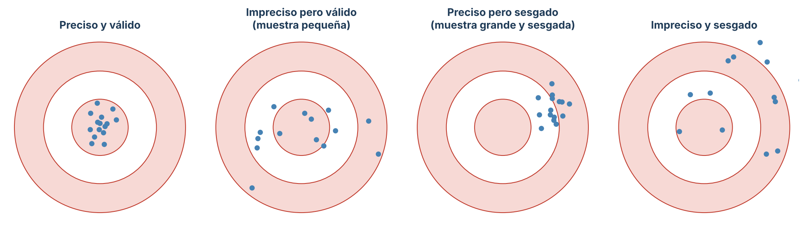
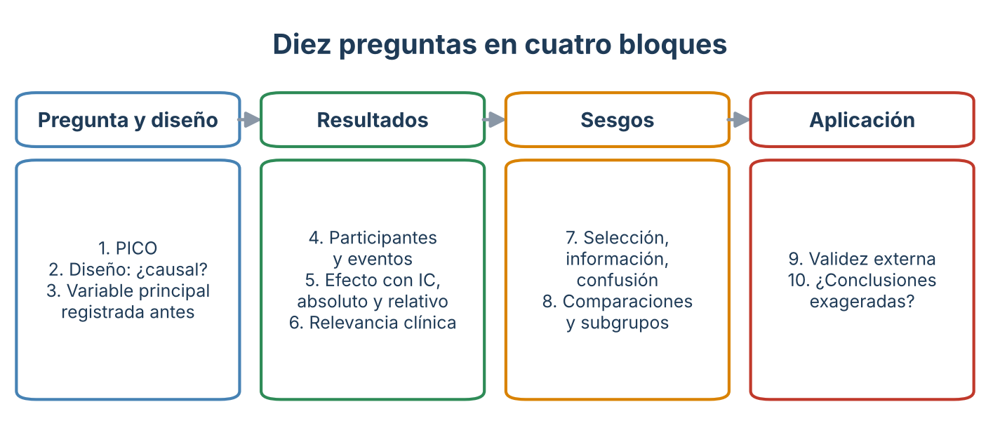
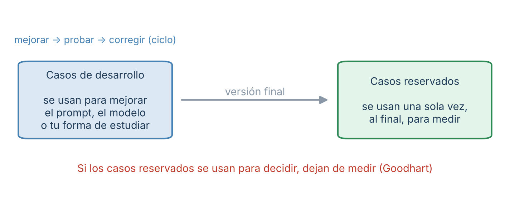

Bioestadística (1964) · Grado en Medicina · Curso 2027-2028
Tema 300Lectura crítica de la evidencia científica y evaluación de la mejora recursiva
Módulo 5. Generalización de conclusiones
Evaluación: el examen del Módulo 5 se hace con Colab. Practica ejecutando e interpretando cada análisis.
Fernando Borrás Rocher · Universidad Miguel Hernández de Elche · CC BY 4.0
Objetivos de aprendizaje
Al terminar esta sesión serás capaz de:
- Leer críticamente el resumen de un estudio clínico con una lista de preguntas sistemática.
- Identificar el diseño, la pregunta PICO y los principales sesgos (selección, información y confusión).
- Relacionar cada diseño con su guía de publicación (CONSORT, STROBE, STARD, TRIPOD+AI, PRISMA).
- Usar un modelo de lenguaje como ayuda en la lectura crítica verificando todo lo que afirma.
- Evaluar con métodos estadísticos si un ciclo de mejora recursiva (de un modelo de IA o de tu propio aprendizaje) mejora de verdad.
Cómo usar esta presentación
Usa el selector de arriba para dar el tema en una sesión completa o en dos sesiones intercaladas.
🎓 Sesión de clase magistral
- 1. Caso clínico de partida 5 min
- 2. Conceptos clave 10 min
- 5. Autoevaluación 5 min
Explica los conceptos, haz la pausa activa y cierra con las ideas clave.
💻 Sesión de Colab
- 3. Demostración: leer un resumen y evaluar una mejora 20 min
- 4. Práctica en la app Bioestadística 10 min
- 5. Autoevaluación 5 min
Cada estudiante abre su copia del cuaderno, predice el resultado y después ejecuta la celda.
Teclas: ← → para pasar · N notas del profesor · M cambiar de modo · F pantalla completa · Esc índice.
1. Caso clínico de partida
«El café reduce un 30 % la mortalidad»

- Es un estudio observacional: «se asoció con», no «reduce».
- Aunque fuera causal, la diferencia absoluta sería de unos 2 puntos en 10 años.
2. Conceptos clave
2.1 La pregunta PICO y el diseño

| Elemento | Pregunta | En el caso del café |
|---|---|---|
| Población | ¿En quién? | 52.000 adultos |
| Intervención o exposición | ¿Qué? | 3 o más cafés al día |
| Comparación | ¿Frente a qué? | No tomar café |
| O (resultado, outcome) | ¿Qué se mide? | Mortalidad a 10 años |
| Diseño | ¿Asigna el investigador la exposición? | Puede demostrar causalidad | Guía de publicación |
|---|---|---|---|
| Ensayo clínico aleatorizado | Sí, al azar | Sí, si está bien hecho | CONSORT |
| Cohortes, casos y controles, transversal | No | Con mucha cautela | STROBE |
| Estudio de pruebas diagnósticas | — | — | STARD |
| Modelo predictivo (también de IA) | — | No pretende | TRIPOD+AI |
| Revisión sistemática y metanálisis | — | Según los estudios incluidos | PRISMA |
Las guías de publicación sirven también para leer: cada apartado es una pregunta que el artículo debería responder.
2. Conceptos clave
2.2 Los tres grandes sesgos
Precisión no es validez

- El tamaño muestral controla el azar (precisión); los sesgos (validez) no se arreglan con más pacientes.
- Un estudio enorme y sesgado da una respuesta precisa y equivocada.
2. Conceptos clave
2.3 Diez preguntas para leer un resumen

- ¿Cuál es la pregunta PICO?
- ¿Qué diseño es? ¿Permite conclusiones causales?
- ¿Cuál es la variable principal? ¿Estaba registrada antes del estudio?
- ¿Cuántos participantes y cuántos eventos hay?
- ¿Se da el efecto con su IC, y en medidas absolutas (RAR, NNT) además de relativas?
- ¿Es clínicamente relevante el efecto, además de estadísticamente significativo?
- ¿Qué sesgos de selección, información o confusión son plausibles?
- ¿Hay muchas comparaciones o análisis de subgrupos no previstos?
- ¿A qué pacientes se pueden aplicar los resultados (validez externa)?
- ¿Concuerdan las conclusiones con los resultados, o los exageran?
2. Conceptos clave
2.4 Evaluar la mejora recursiva
Para mejorar y para medir hacen falta dos conjuntos de casos

- Se mejora con unos casos y se mide, una sola vez, con otros reservados.
- Vale para un prompt, un modelo de IA… y para tu propio aprendizaje con los informes de la app.
Pausa activa
Piensa 30 segundos, comenta con quien tienes al lado y vota.
Un estudio de cohortes con 200.000 personas encuentra una asociación muy precisa (IC estrecho) entre un alimento y menor mortalidad. ¿Qué puede concluirse?
En la sesión de Colab
Lo que acabas de ver se comprueba con datos en el cuaderno del Tema 300.
- Abre el cuaderno y guarda tu copia: Archivo → Guardar una copia en Drive.
- Ejecuta la celda de configuración.
- Ve a la demostración y predice cada resultado antes de ejecutar.
3. Demostración: leer un resumen y evaluar una mejora
3.1 Del riesgo relativo al absoluto
▶ En tu cuaderno: 3.1 Del riesgo relativo al absoluto. Antes de ejecutar, escribe qué esperas obtener.
Supongamos que la mortalidad a 10 años en los que no toman café es del 8 %. Si el efecto fuera causal (gran «si»), ¿qué significaría un HR de 0,70?
import numpy as np
import pandas as pd
from scipy import stats
riesgo_basal = 0.08
for hr in [0.70, 0.62, 0.79]:
riesgo_cafe = 1 - (1 - riesgo_basal) ** hr # aproximación con riesgos proporcionales
rar = riesgo_basal - riesgo_cafe
print(f"HR {hr:.2f}: mortalidad {riesgo_cafe:.1%} frente a {riesgo_basal:.0%} · RAR {rar:.1%} · «NNT» {1 / rar:.0f} a 10 años")Aun aceptando la causalidad, harían falta unas 40 personas tomando café 10 años para evitar una muerte. Y como es un estudio observacional, ese número no es un NNT: no se ha demostrado que cambiar el hábito cambie el riesgo.
3. Demostración: leer un resumen y evaluar una mejora
3.2 Un modelo de lenguaje como ayudante de lectura crítica
▶ En tu cuaderno: 3.2 Un modelo de lenguaje como ayudante de lectura crítica. Antes de ejecutar, escribe qué esperas obtener.
Esta celda prepara la conexión con el modelo de lenguaje (Tema 80). Lee la clave de Secretos sin mostrarla. Si no hay clave, el cuaderno funciona con respuestas de ejemplo. Si el modelo indicado ya no existe, cambia la variable MODELO.
%pip install -q google-genai
MODELO = "gemini-2.5-flash"
try:
from google.colab import userdata
from google import genai
from google.genai import types
cliente = genai.Client(api_key=userdata.get("GEMINI_API_KEY"))
print("Conexión preparada con el modelo", MODELO)
except Exception as error:
cliente = None
print("Sin clave o fuera de Colab: se usarán respuestas de ejemplo.", type(error).__name__)
def preguntar(prompt, temperatura=0.2):
"""Envía un prompt al modelo y devuelve su texto (None si no hay conexión)."""
if cliente is None:
return None
respuesta = cliente.models.generate_content(
model=MODELO,
contents=prompt,
config=types.GenerateContentConfig(temperature=temperatura),
)
return respuesta.textresumen = """Estudio de cohortes prospectivo con 52.000 adultos seguidos 10 años. Los que tomaban 3 o más
cafés al día tuvieron una mortalidad menor que los que no tomaban café (HR ajustado 0,70; IC 95 %:
0,62 a 0,79). Los resultados se ajustaron por edad, sexo y tabaco. Conclusión: el café reduce la mortalidad."""
prompt = f"""Eres un epidemiólogo. Analiza críticamente este resumen respondiendo, en una línea cada una,
a estas preguntas: 1) PICO; 2) diseño y si permite causalidad; 3) principales confusores no ajustados;
4) qué medida absoluta falta; 5) si la conclusión está justificada. No inventes datos que no estén en el resumen.
Resumen: {resumen}"""
respuesta = preguntar(prompt)
if respuesta is None:
respuesta = """1) P: 52.000 adultos; I: ≥ 3 cafés/día; C: no tomar café; O: mortalidad a 10 años.
2) Cohortes prospectivo, observacional: no permite afirmar causalidad.
3) Nivel socioeconómico, actividad física, dieta, alcohol, enfermedades previas (causalidad inversa).
4) Falta la mortalidad absoluta en cada grupo, la diferencia de riesgos y el número de muertes.
5) No: «reduce» es un lenguaje causal que el diseño no respalda; debería decir «se asoció con».
(Respuesta de ejemplo: configura tu clave para obtener la del modelo.)"""
print(respuesta)Verifica cada punto con las diez preguntas del apartado 2.3. Los modelos de lenguaje son útiles para no olvidar ninguna pregunta, pero pueden:
- Inventar datos o referencias que no están en el texto («según el estudio, el seguimiento fue del 95 %»).
- Dar por buena una conclusión si el prompt la presenta como cierta.
- Fallar en los cálculos (comprueba siempre con código, como en 3.1).
Y nunca se les deben dar datos de pacientes.
3. Demostración: leer un resumen y evaluar una mejora
3.3 ¿Mejora la versión nueva del prompt? McNemar con pruebas reservadas
▶ En tu cuaderno: 3.3 ¿Mejora la versión nueva del prompt? McNemar con pruebas reservadas. Antes de ejecutar, escribe qué esperas obtener.
Un equipo mejora un prompt que clasifica informes de radiografía de tórax como «neumonía sí/no». Prueban la versión 1 y la versión 2 con los mismos 150 informes reservados, nunca usados durante el desarrollo.
from statsmodels.stats.contingency_tables import mcnemar
# v2 acierta v2 falla
tabla = np.array([[112, 5], # v1 acierta
[17, 16]]) # v1 falla
n = tabla.sum()
print(f"Exactitud v1: {tabla[0].sum() / n:.1%} · v2: {tabla[:, 0].sum() / n:.1%}")
print(f"Discordantes: solo v2 acierta {tabla[1, 0]} · solo v1 acierta {tabla[0, 1]}")
print(f"McNemar exacta: p = {mcnemar(tabla, exact=True).pvalue:.3f}")La versión 2 acierta 8 puntos más, y entre los 22 informes en que discrepan, acierta en 17. Como los 150 informes estaban reservados, esta mejora sí es una estimación honesta.
3. Demostración: leer un resumen y evaluar una mejora
3.4 Goodhart: mejorar contra la misma prueba
▶ En tu cuaderno: 3.4 Goodhart: mejorar contra la misma prueba. Antes de ejecutar, escribe qué esperas obtener.
Ahora simulamos un error frecuente. El equipo prueba 30 variantes de prompt que en realidad son todas igual de buenas (exactitud real del 80 %). Las evalúa con los mismos 40 casos y se queda con la mejor.
rng = np.random.default_rng(seed=300)
exactitud_real = 0.80
casos_desarrollo, casos_reservados, variantes = 40, 400, 30
mejor_en_desarrollo, misma_en_reservados = [], []
for _ in range(2000):
resultados = rng.binomial(casos_desarrollo, exactitud_real, size=variantes) / casos_desarrollo
mejor_en_desarrollo.append(resultados.max())
misma_en_reservados.append(rng.binomial(casos_reservados, exactitud_real) / casos_reservados)
print(f"Exactitud real de todas las variantes: {exactitud_real:.0%}")
print(f"Exactitud de la «mejor» en los 40 casos de desarrollo: {np.mean(mejor_en_desarrollo):.1%} de media")
print(f"Exactitud de esa misma variante en 400 casos reservados: {np.mean(misma_en_reservados):.1%}")Si se elige la mejor de 30 variantes con los mismos casos, aparece una «mejora» de unos 12 puntos que no existe. Es la selección del máximo del azar, la misma lógica de las comparaciones múltiples (Tema 260). La mejora recursiva necesita dos conjuntos de casos: uno para mejorar y otro, reservado, para medir.
3. Demostración: leer un resumen y evaluar una mejora
3.5 Tu propia mejora recursiva: los informes de la app
▶ En tu cuaderno: 3.5 Tu propia mejora recursiva: los informes de la app. Antes de ejecutar, escribe qué esperas obtener.
Cada informe de la app Bioestadística registra dos datos por misión. Si la resolviste en el primer intento y si la resolviste tras la pista del asistente. Con los informes de las 30 unidades se puede analizar tu aprendizaje igual que el de un modelo. Aquí, con datos simulados de un estudiante; en la misión reto lo harás con los tuyos.
unidades = np.repeat(np.arange(10, 310, 10), 3)
mision = np.tile(["básica", "clínica", "reto"], 30)
dificultad = np.tile([0.5, 0.0, -0.7], 30)
progreso = (unidades - 150) / 150 * 0.8 # el estudiante mejora a lo largo del curso
p_primero = 1 / (1 + np.exp(-(0.6 + dificultad + progreso)))
primero = rng.random(90) < p_primero
tras_pista = primero | (rng.random(90) < 0.6)
informes = pd.DataFrame({"unidad": unidades, "mision": mision, "primer_intento": primero, "tras_pista": tras_pista})
informes.head(6)tabla_pista = pd.crosstab(informes["primer_intento"], informes["tras_pista"]).reindex(
index=[True, False], columns=[True, False], fill_value=0)
print(tabla_pista, "\n")
print(f"Acierto en el primer intento: {informes['primer_intento'].mean():.0%} · tras la pista: {informes['tras_pista'].mean():.0%}")
print(f"McNemar exacta: p = {mcnemar(tabla_pista.to_numpy(), exact=True).pvalue:.1e}")La pista ayuda: es lo esperable. La pregunta más interesante para tu aprendizaje es otra: ¿dependes menos de la pista a medida que avanza el curso?
from statsmodels.stats.proportion import proportion_confint
import matplotlib.pyplot as plt
informes["modulo"] = pd.cut(informes["unidad"], [0, 40, 80, 130, 190, 300],
labels=["M1 Python", "M2 IA", "M3 Datos", "M4 Probabilidad", "M5 Inferencia"])
resumen = informes.groupby("modulo", observed=True)["primer_intento"].agg(["sum", "count"])
resumen["proporcion"] = resumen["sum"] / resumen["count"]
ic = [proportion_confint(s, n_, method="wilson") for s, n_ in zip(resumen["sum"], resumen["count"])]
resumen["li"], resumen["ls"] = zip(*ic)
plt.figure(figsize=(8, 4))
plt.errorbar(range(len(resumen)), resumen["proporcion"],
yerr=[resumen["proporcion"] - resumen["li"], resumen["ls"] - resumen["proporcion"]],
marker="o", capsize=4)
plt.xticks(range(len(resumen)), resumen.index)
plt.ylim(0, 1)
plt.ylabel("Acierto en el primer intento (IC 95 %)")
plt.title("Evolución del aprendizaje autónomo a lo largo del curso")
plt.show()
resumen.round(2)import statsmodels.formula.api as smf
informes["acierto"] = informes["primer_intento"].astype(int)
tendencia = smf.logit("acierto ~ unidad + C(mision)", data=informes).fit(disp=0)
b = tendencia.params["unidad"]
li, ls = tendencia.conf_int().loc["unidad"]
print(f"OR de acertar al primer intento por cada 100 temas de avance: {np.exp(100 * b):.2f} "
f"(IC 95 %: {np.exp(100 * li):.2f} a {np.exp(100 * ls):.2f}), ajustada por el tipo de misión")Un modelo logístico (Tema 280) ajustado por la dificultad de la misión estima una tendencia: si resuelves más misiones sin ayuda a lo largo del curso. Con solo 90 misiones el IC es ancho: un estudiante es una muestra pequeña. Agregando los informes de toda la clase, el profesor puede ver qué unidades necesitan mejorarse: la asignatura también está sometida a mejora recursiva.
Ampliación
Ampliación: la pirámide no lo es todo
Las revisiones sistemáticas de ensayos están en lo alto de la jerarquía de la evidencia, pero:
- Un metanálisis de ensayos sesgados es un resultado sesgado más preciso.
- Para muchas preguntas (efectos adversos raros, pronóstico, factores de riesgo que no se pueden asignar) los estudios observacionales son la mejor evidencia disponible.
- Los sistemas como GRADE valoran la certeza de la evidencia por más criterios que el diseño. Son el riesgo de sesgo, la imprecisión, la inconsistencia, la evidencia indirecta y el sesgo de publicación.
Ampliación
Ampliación: errores frecuentes
Leer solo las conclusiones del resumen.
Confundir precisión (IC estrecho) con validez (ausencia de sesgo).
Aceptar lenguaje causal en estudios observacionales.
Fiarse de las referencias o los datos que aporta un modelo de lenguaje sin comprobarlos en la fuente.
Medir la mejora de un sistema con los mismos casos usados para mejorarlo.
Juzgar tu progreso por una sola unidad: usa todas las misiones y su IC.
4. Práctica en la app Bioestadística
Abre la unidad 300 de la app Bioestadística y completa sus misiones:
- Misión básica (sin asistente): aplicar las diez preguntas de lectura crítica a tres resúmenes (un ensayo, una cohorte y un modelo de IA).
- Misión clínica (con pistas): reescribir con medidas absolutas y lenguaje no causal la nota de prensa de un estudio observacional.
- Misión reto (con asistente): cargar tus informes de las 30 unidades y comparar con McNemar tu acierto en el primer intento y tras la pista. Estimar tu tendencia a lo largo del curso y escribir un párrafo de autoevaluación.
Al terminar, exporta el informe final y súbelo junto con los anteriores: forman la evaluación continua (EC) de la asignatura.
5. Autoevaluación
Responde sin asistente.
5. Autoevaluación
Elige una opción: verás la explicación.
Un estudio de cohortes con 200.000 personas encuentra una asociación muy precisa (IC estrecho) entre un alimento y menor mortalidad. ¿Qué puede concluirse?
¿Qué guía de publicación usarías para valorar un artículo sobre un sistema de IA que predice la sepsis?
Un modelo de lenguaje resume un artículo y cita «una tasa de seguimiento del 96 %» que no aparece en el texto. ¿Qué ha ocurrido?
Dos versiones de un prompt se evalúan con los mismos 200 casos reservados. ¿Qué prueba compara su exactitud?
Se prueban 25 variantes de un prompt con los mismos 30 casos y se elige la que más acierta. ¿Qué pasará al evaluarla con casos nuevos?
Ideas clave
- Lee cada estudio con la pregunta PICO, el diseño, los sesgos y el efecto en medidas absolutas con su IC.
- El tamaño muestral controla el azar, no los sesgos: precisión no es validez.
- Las guías de publicación (CONSORT, STROBE, STARD, TRIPOD+AI, PRISMA) son también listas de lectura crítica.
- Un modelo de lenguaje ayuda a leer, pero todo lo que afirma se verifica.
- La mejora recursiva se mide con datos apareados y con pruebas reservadas; tu aprendizaje también.
Glosario
| Término | Definición |
|---|---|
| Lectura crítica | Evaluación sistemática de la validez, los resultados y la aplicabilidad de un estudio |
| Pregunta PICO | Formulación de una pregunta clínica en población, intervención, comparación y resultado |
| Sesgo de selección | Error por la forma en que se eligen o se pierden los participantes |
| Sesgo de información | Error en la medida de la exposición o del resultado |
| Validez interna | Ausencia de sesgos en el estudio |
| Validez externa | Aplicabilidad de los resultados a otras poblaciones |
| CONSORT, STROBE, STARD, PRISMA | Guías de publicación de ensayos, estudios observacionales, pruebas diagnósticas y revisiones sistemáticas |
| GRADE | Sistema para valorar la certeza de la evidencia y la fuerza de las recomendaciones |
| Alucinación | Información falsa generada por un modelo de lenguaje con apariencia de verdadera |
| Mejora recursiva | Ciclo de generar, evaluar, corregir y volver a evaluar |
| Pruebas reservadas | Casos que no se usan para mejorar un sistema y sirven solo para medir su rendimiento |
Para saber más
- Greenhalgh T. How to Read a Paper: The Basics of Evidence-Based Healthcare. 6.ª ed. Hoboken: Wiley-Blackwell; 2019.
- Red EQUATOR (Enhancing the QUAlity and Transparency Of health Research): guías de publicación en equator-network.org.
- Guyatt GH, et al. GRADE: an emerging consensus on rating quality of evidence and strength of recommendations. BMJ. 2008;336(7650):924-926. doi:10.1136/bmj.39489.470347.AD
- Ioannidis JPA. Why most published research findings are false. PLoS Med. 2005;2(8):e124. doi:10.1371/journal.pmed.0020124